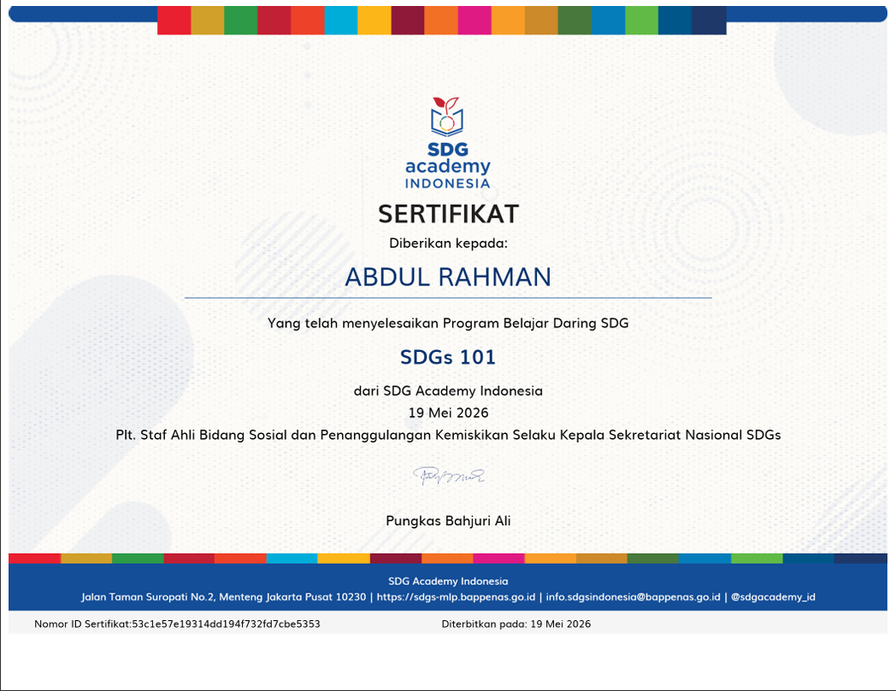
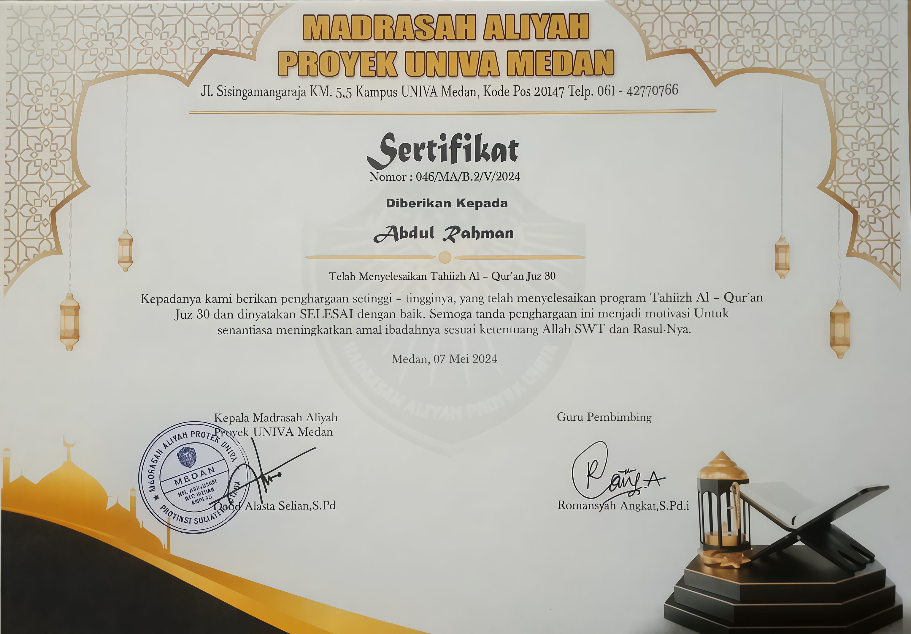
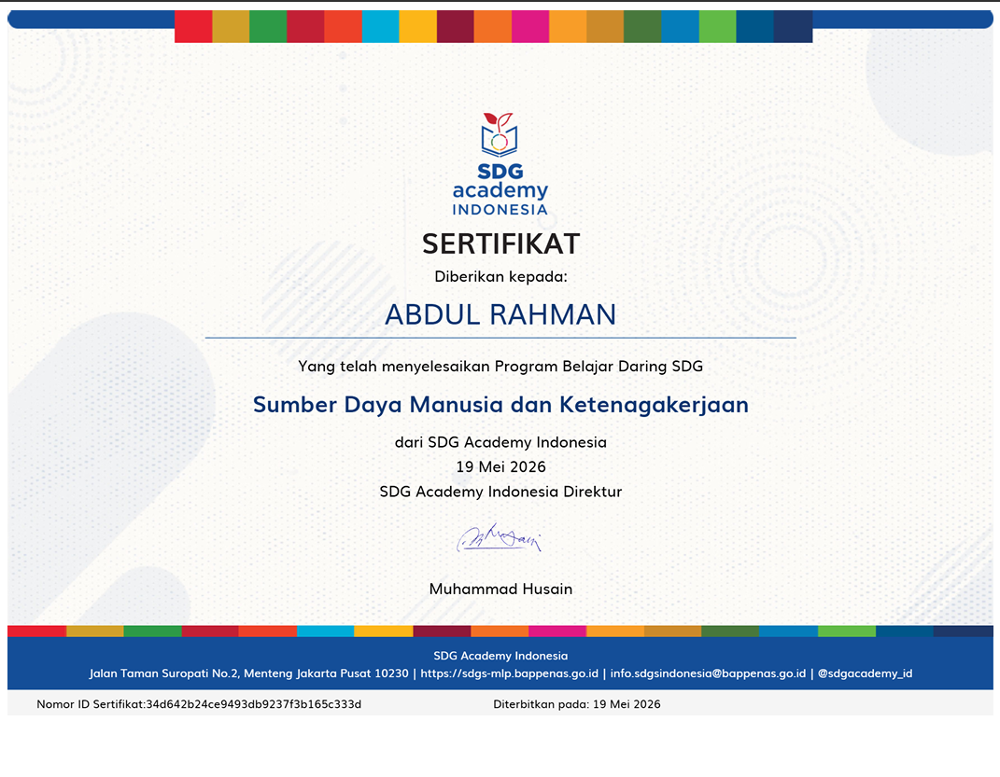
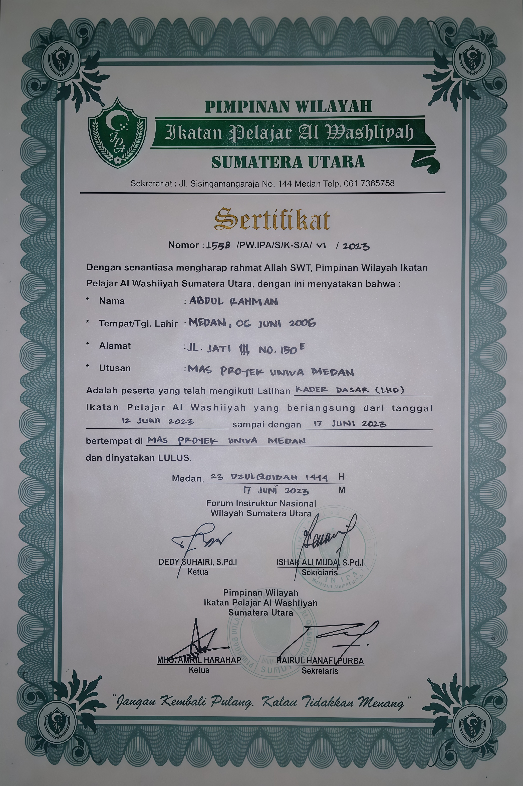
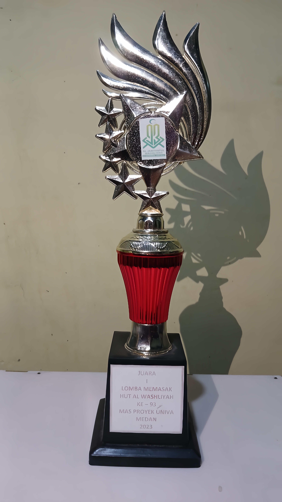
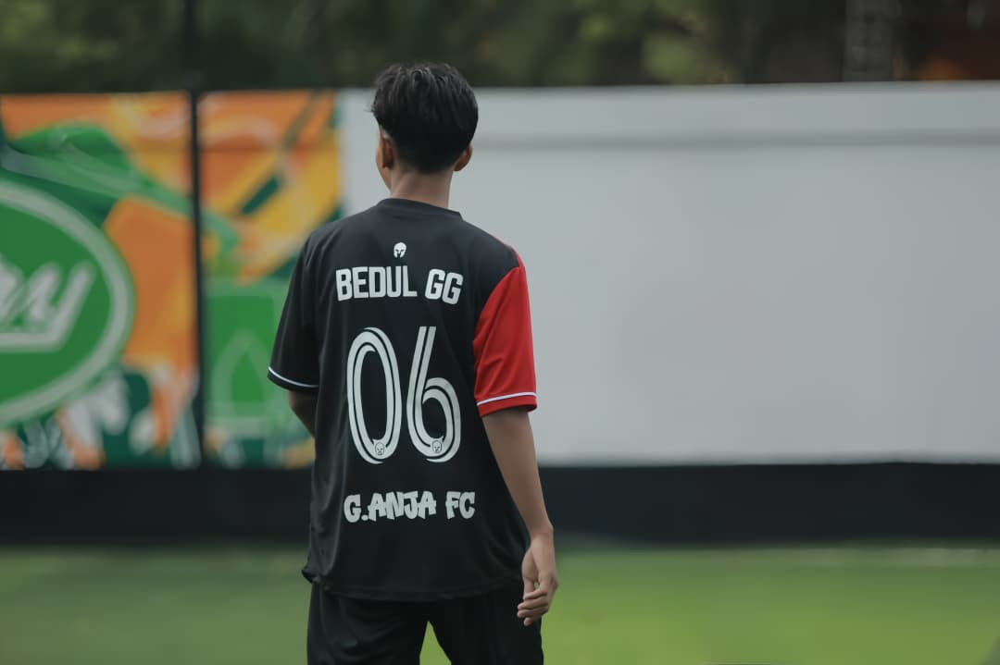
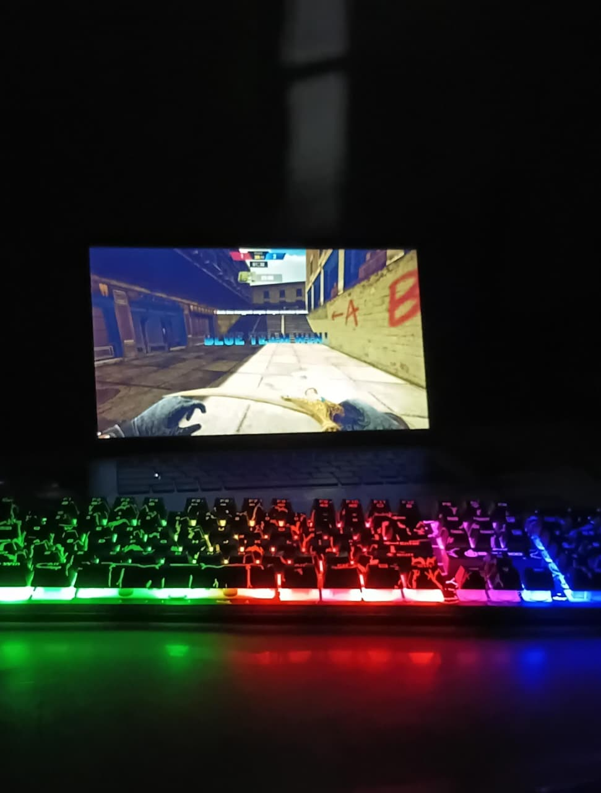

Halo, saya Abdul Rahman, mahasiswa Program Studi Informatika di Universitas Satya Terra Bhinneka. Saya memiliki minat yang besar dalam bidang teknologi informasi, pengembangan perangkat lunak, dan pemrograman.
Selama perkuliahan, saya telah mempelajari berbagai teknologi seperti Python, Java, HTML, CSS, JavaScript, MySQL, serta Proteus. Saya terus mengembangkan kemampuan melalui berbagai tugas, proyek, dan pembelajaran mandiri.
Selain aktif dalam dunia teknologi, saya memiliki hobi bermain futsal (mini soccer) dan bermain game. Dari hobi tersebut saya belajar kerja sama tim, komunikasi, strategi, fokus, dan pengambilan keputusan yang cepat.
TK NURUL AL FATH
SD NEGERI 064036 MEDAN
SMP NEGERI 4 MEDAN
MAS PROYEK UNIVA MEDAN
UNIVERSITAS SATYA TERRA BHINNEKA
Beberapa sertifikat dan penghargaan yang telah saya peroleh.

SDG Academy Indonesia
19 Mei 2026

MAS PROYEK UNIVA MEDAN
07 Mei 2024

SDG Academy Indonesia
19 Mei 2026

MAS PROYEK UNIVA MEDAN
17 Juni 2023

MAS PROYEK UNIVA MEDAN
30 November 2023

Bermain futsal atau mini soccer untuk menjaga kebugaran, melatih kerja sama tim, dan meningkatkan sportivitas.

Bermain game sebagai hiburan sekaligus melatih strategi, kreativitas, dan kerja sama tim.